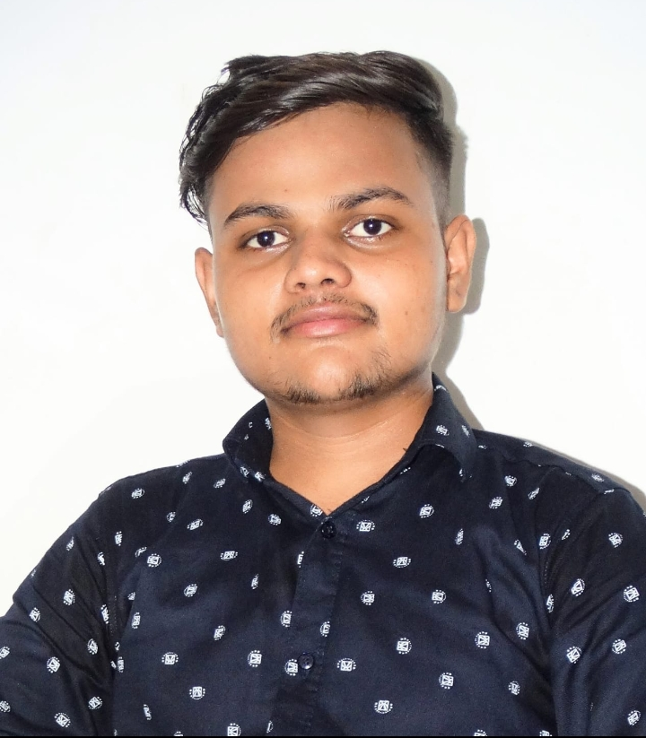
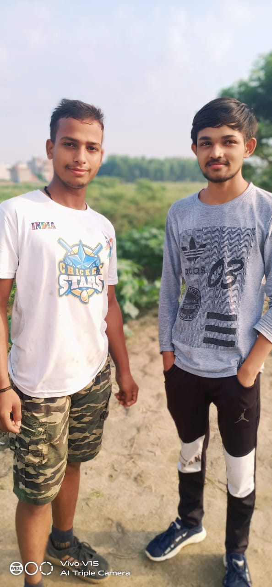

S/O DHANANJAY SINGH & KAMLESH SINGH(MOM)
Royal entry on 11 November
Angry look and helpful nature for Everyone(except deciever and selfish people)
Study in M.M.H DEGREE COLLEGE B,SC(maths)
Believe in Simple living and high thinking
Belong to Rajput family (BADKA GHAR)
BEST FRIEND-DEEPAK MORYA(first meet in class 2nd in R.P.J.H.S)
BEST FRIEND & SISTER IN GHAZIABAD-BHAVNA BHANDARI(first meet in class2nd in R.P.J.H.S)
FRIEND-ANURAG YADAV(first meet in class 3rd in R.P.J.H.S)
)
SENIOR-ANUJ SINGH (first meet in class 4th inR.P.J.H.S)

PANKAJ SINGH RANA(Guider good friend & IIITian)

SACHIN YADAV(guider in Health,Sports& society) CAPTAIN OF OUR CRICKET TEAM
.
SAKHT LONDE GROUP MEMBERS
ANUJ SINGH(Graduation in B.SC(Maths)
PANKAJ SINGH RANA (IIITian)
SACHIN YADAV (DOCTOR)
DEEPAK MORYA (ENJINEER)
MOHAN SINGH (SINGH)

 FRIEND-ANURAG YADAV(first meet in class 3rd in R.P.J.H.S)
FRIEND-ANURAG YADAV(first meet in class 3rd in R.P.J.H.S)
 )
)
 .
.